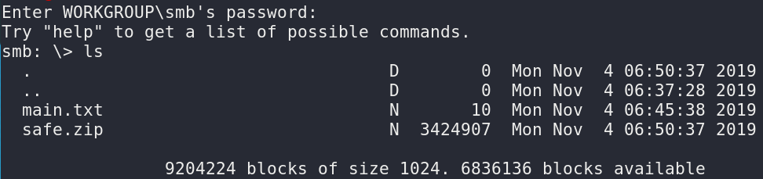

It will ask us for password but remember "GET smb free". We can enter when we enter without entering anything.
Output: 
Looking at what's going on with “ls", we see 'main.txt' and 'safe.zip'. "get" command is enough to download them to our computer.
smb:\> get main.txt getting file\main.txt of size 10 as main.txt (0.0 KiloBytes/sec)(average 0.0 KiloBytes/sec) smb:\> get safe.zip getting file\safe.zip of size 3424907 as safe.zip (27641.6 KiloBytes/sec)(average 5153.5 KiloBytes/sec)
Now let's see what's in our files.
• There is nothing in our “main.txt” file. • Our “safe.zip” file is encrypted.
Let's use our bruteforce attack tool to find the zip password.